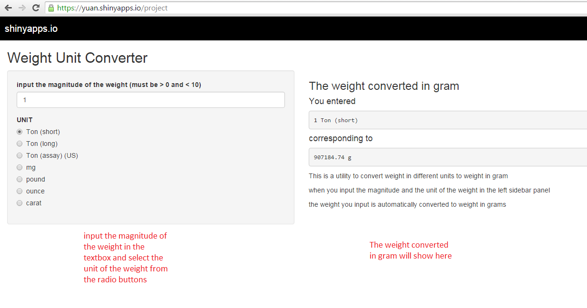

Welcome to the introduction to this on-line tool that converts weight in different units to gram.
The web page of this online tool is shown here.
Once you input the magnitude of the weight and choose the corresponding weight unit, the weight you input will be converted to weight in gram
